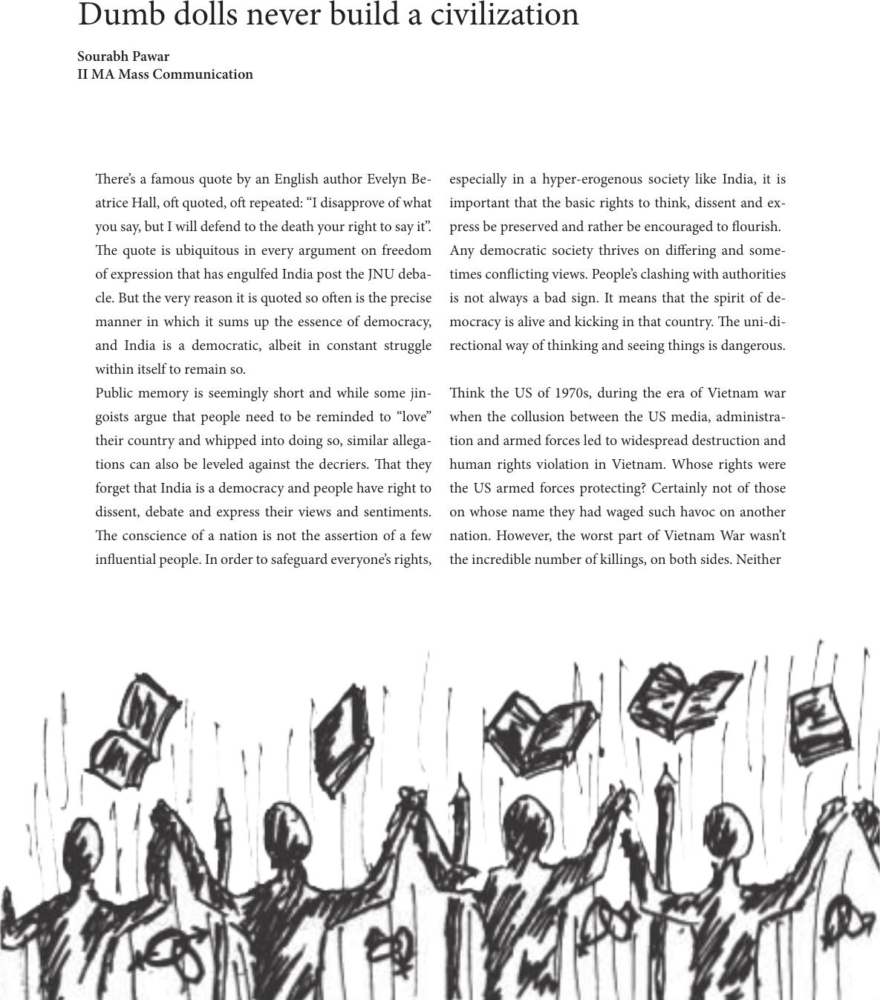

Sourabh Pawar
II MA Mass Communication
ere’s a famous quote by an English author Evelyn Be-
atrice Hall, o quoted, o repeated: “I disapprove of what
you say, but I will defend to the death your right to say it”.
e quote is ubiquitous in every argument on freedom
of expression that has engulfed India post the JNU deba-
cle. But the very reason it is quoted so oen is the precise
manner in which it sums up the essence of democracy,
and India is a democratic, albeit in constant struggle
within itself to remain so.
Public memory is seemingly short and while some jin-
goists argue that people need to be reminded to “love”
their country and whipped into doing so, similar allega-
tions can also be leveled against the decriers. at they
forget that India is a democracy and people have right to
dissent, debate and express their views and sentiments.
e conscience of a nation is not the assertion of a few
inuential people. In order to safeguard everyone’s rights,
especially in a hyper-erogenous society like India, it is
important that the basic rights to think, dissent and ex-
press be preserved and rather be encouraged to ourish.
Any democratic society thrives on diering and some-
times conicting views. People’s clashing with authorities
is not always a bad sign. It means that the spirit of de-
mocracy is alive and kicking in that country. e uni-di-
rectional way of thinking and seeing things is dangerous.
ink the US of 1970s, during the era of Vietnam war
when the collusion between the US media, administra-
tion and armed forces led to widespread destruction and
human rights violation in Vietnam. Whose rights were
the US armed forces protecting? Certainly not of those
on whose name they had waged such havoc on another
nation. However, the worst part of Vietnam War wasn’t
the incredible number of killings, on both sides. Neither
Dumb dolls never build a civilization